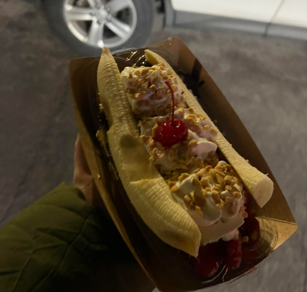

Writing
A few thoughts about banana splits
March 8 2026
Hello. Do you ever get the feeling like things are moving too quickly? I heard that happens as you get older.

Another Note
March 2026
Sometimes the internet feels too big. I like having a small page like this.